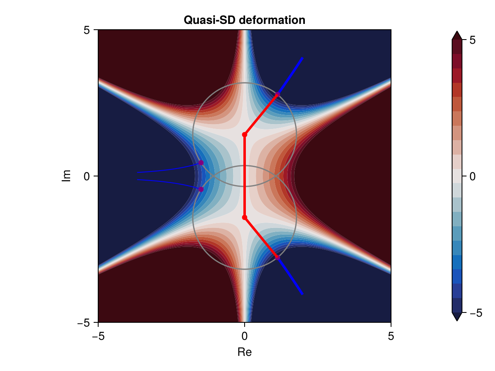

Algorithm
A Regularised Numerical Steepest Descent (RNSD) method involves a combination of contour deformations and quadrature rules to evaluate oscillatory integrals. This is automated by basic interface is the following
NumericalSteepestDescent.nsd — Function
nsd(γ0::Vector, f::Function, G::AbstractPhase, ω)Compute the oscillatory integral with
\[ \int_{\gamma_0} f(z)e^{i\omega g(z)} dz.\]
Infinite endpoints can be specified with infcontour (default [false, false]). Returns a vector of figures if plot_graph or plot_sd are specified as true (default is false for both).
First, the algorithm first determines a quasi-SD contour, which is the union of three contour types:
- Finite contours inside non-oscillatory regions,
- Infinite contours going into valleys, regions where $|e^{i\omega g(z)}| \to 0$ as $z$ tends to the valley,
- Finite SD contours that connect two non-oscillatory regions.
Then, it applies suitable quadrature rules on each of these contours, e.g. Gaussian quadrature, and returns an approximated value.
Basic use
Consider an integral representation of the Airy function, such as (9.5.4) in DLMF, where the integration curve is an infinite curve $(\infty e^{-i\pi/3}, \infty e^{i\pi/3})$. To specify that endpoints are infinite, use infcontour = [true, true]. To visualise the quasi-SD contour followed, use $plot_sd = true$.
using NumericalSteepestDescent
Phase = PolynomialPhase(-im*[0,+2,0,1/3]) # We are evaluating Ai(-2)
a, b = -π/3, π/3 # (∞exp(-im*π/3), ∞exp(im*π/3))
f(z) = 1.0
ω = 1.0 # Frequency parameter
ai, fig = nsd([a, b], f, Phase, ω; infcontour = [true, true],
plot_sd = true)
The colorbar shows $-\Im[g(\eta)]$, so blue regions are valleys at infinity, and red regions are hills (integrand grows exponentially). The red lines represent finite contours, blue lines SD contours, and green lines finite SD contours (not shown). Bold lines correspond to the quasi-SD deformed contour where quadrature rules are applied.
Advanced use
There is also a number of adjustable parameters
| Keyword | Default | Meaning |
|---|---|---|
N | $25$ | Number of quadrature points used on each contour |
Cball | $2\pi$ | Control maximum number of oscillations on non-oscillatory balls (and hence the ball radius) |
Nrays | $16$ | Number of rays used when determining the ball radius |
δball | $10^{-3}$ | Governs when overlapping balls should be amalgamated |
δODE | $0.1$ | Governs the local step size in the ODE solver for SD path tracing |
δcoarse | $0.01$ | Tolerance for the increment in corrector step of SD path tracing |
δfine | $10^{-13}$ | Tolerance of Newton solver for quadrature |
δquad | $10^{-16}$ | Tolerance for truncation and dropping contours if contribution is too small |